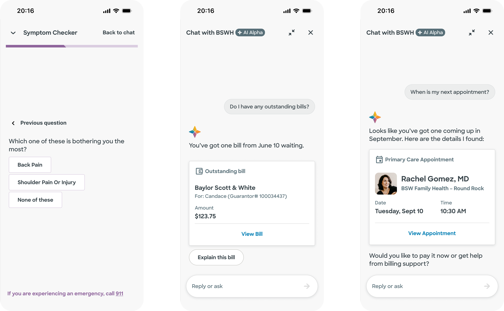

Conversational AI Assistant for Patient Self-Service
Baylee is a generative AI assistant integrated into the Baylor Scott & White Health app, designed to help patients manage healthcare tasks through natural language. This project focused on the Alpha release: establishing a safe, coherent foundation for conversational care that addressed real patient needs within a rigorous medical context.
Our objective was to design a conversational experience that allowed patients to complete complex healthcare tasks end-to-end. The interface had to remain accessible and clear while navigating strict medical guardrails, ensuring the tone felt calm and clinical rather than overly anthropomorphic.

We prioritised making the chat genuinely functional rather than just conversational. By identifying fragmented or hard-to-find user flows—such as symptom triage, scheduling, and billing—we brought these actions directly into the chat interface to reduce user friction and prevent unnecessary redirects.
Simplifying complex medical flows
Healthcare data can quickly become overwhelming, especially within the narrow constraints of a mobile chat interface.
Solution:
We designed for extreme restraint. Conversations were broken into small, scannable steps that requested only the minimum information required. By avoiding medical jargon and prioritising familiar UI components and clear calls to action, we ensured that safety and comprehension remained the primary focus.
Designing for high-stakes escalation
In a medical environment, safety is a primary design constraint. We had to ensure the AI could handle urgent or "red flag" inputs with absolute precision.
Solution:
We developed explicit UI behaviours for risk scenarios. When an urgent input is detected, the interface shifts: the tone becomes direct and supportive, and a persistent banner guides the user toward immediate emergency help. We ensured the copy avoided diagnostic reassurance, instead prioritising clear, real-world escalation paths.
Using interaction to clarify rather than decorate
For patients who may be in distress or have accessibility needs, unnecessary animation can be distracting or physically disruptive.
Solution:
We established strict motion and accessibility guidelines. Motion was used exclusively to clarify state changes or transitions, ensuring that focus states were preserved and "reduce motion" preferences were respected. We documented these as a practical checklist for engineering and QA to ensure the interface remained stable and inclusive.
During the Alpha QA phase, we identified specific opportunities for the next stage of the product. This included the development of richer interaction patterns for complex medical inputs and an expanded UI aligned with clinical frameworks such as OLDCARTS. By documenting these as intentional next steps, we maintained a tight, safe scope for the initial release.
The Alpha release successfully turned abstract discussions about AI into a tangible, credible product experience, building significant confidence across clinical and compliance teams.
• Feasibility: Demonstrated that AI can safely support end-to-end patient tasks.
• Trust: Established a shared framework for tone, safety, and medical scope.
• Validation: Provided a functional proof-of-point for AI-powered self-service in a highly regulated industry.